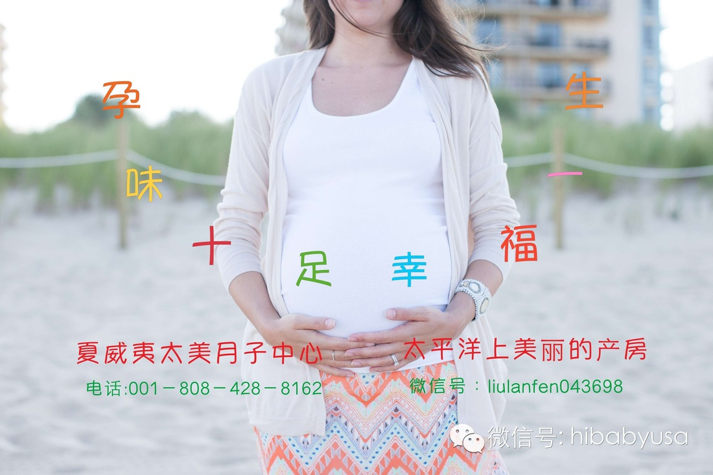

太美月子中心新生儿护理
新生儿并不像想象中的那样可爱漂亮。新生儿全身布满皱纹，而且睁不开眼睛，但是只要过了一段时间，就会变得非常可爱喔。
新生儿的头发、头部、眼睛、胸部、手指甲与脚指甲以及肚脐分别有什么样的特别状态呢？
对于新生儿的第一天，新爸爸新妈妈们或许会对宝宝存在很多疑惑，不知道他的第一天会做些什么？也不了解喂母乳还是奶粉？多久喂一次？
出生后，本来在妈妈腹中生活的胎儿现在只能靠自己的力量生存。在刚出生时，新生儿就要接受有助于呼吸的基本护理，并好好做一下身体的清洁。
做完新生儿的基本护理后，医生就要马上对新生儿展开全面的身体检查。此时，妈妈也可以参与，因此最好向医生咨询疑惑的问题。

新生儿护理常规： 新生儿由于肠道发育还没完全，而且臀部皮肤细嫩，因此经常会有便秘、腹泻、 尿布疹、红臀等等的问题，因此如何正确处理新生儿的大小便显得尤其重要。
新生儿大便：新生儿大便里面，隐藏了很多宝宝身体里的小秘密。爸妈可以通过观察宝宝便便的性状、 排便次数等，去了解宝宝消化状态和适时调整孩子饮食。爸妈对孩子每天的大便次数要心中有数，留意便便的颜色有没有异常，有没有特殊气味等。
婴儿尿布疹：尿布疹是发生在裹尿布部位的一种皮肤炎性病变，也称为婴儿红臀，表现为臀部与尿布接触区域的皮肤发红、发肿，甚至出现溃烂、 溃疡及感染，稍有轻微的外力或摩擦便会引起损伤。继续发展则出现渗出液，表皮脱落，浅表的溃疡，不及时治疗则发展为较深的溃疡，甚至褥疮。
臀部护理： 宝宝肌肤娇嫩，特别是臀部经常被尿布包裹着，容易引起尿布疹。保护及护理宝宝的臀部肌肤， 成了新手爸妈的一项必修课。护理宝宝臀部，最重要是勤换尿布，让宝宝臀部保持干爽。
脐带护理：宝宝脐带切断后，脐带残端会逐渐干枯变细而成为黑色。通常在出生后3—7天内，脐带残端会逐步脱落。脐带结扎剪断部位容易感染， 同时脐带可直达宝宝的体内血管，因此在断脐后，对脐带残端的护理非常重要。
新生儿护理技巧
妈妈对于新生儿在生命中出现，刚开始还是有些紧张的，不知道该从而做起。不过妈妈不需要担心，这里为您介绍四点新生儿护理技巧，包括新生儿皮肤护理、 眼睛护理、耳鼻以及肚脐护理，这些部位都是新生儿身体比较敏感的部位。以下关于新生儿护理技巧能够帮助妈妈能让新生儿健康成长。
1、新生儿皮肤的护理：新生儿不需要肥皂。肥皂是一种脱脂剂，而新生儿的皮肤很娇嫩。新生儿需要保留所有的天然油脂，所以6个星期前只能用水洗。6个星期后，可以用肥皂。 妈妈也许想要试试一种特别的液体肥皂，这种肥皂只需加到洗澡水里就行，无须冲洗。一定要用沾有肥皂的手指好好地擦洗过所有的褶皱，然后再冲洗干净。 将皮肤彻底揩干，潮湿的褶皱部分非常容易导致发炎，绝不要使用爽身粉。
2、新生儿眼睛的护理：给新生儿清洗眼部的时候，先把几个棉球在湿水里沾湿，再挤干水分， 擦每一只闭上的眼睛的时候都要换一个新的棉球，从内眼角向外眼角擦。
3、新生儿耳鼻的护理：鼻子和耳朵是具有自净功能的器官，所以妈妈不要试图往里面塞什么东西或者以任何方式干扰它们。 往鼻孔里或者耳朵里塞棉球大小的东西只会把原来就在那儿的东西推到更往里的位置去。让里面的东西自然掉出来的办法要好得多。
4、新生儿肚脐的护理：婴儿一出生脐带就会被夹住并立刻剪断，只留下5-8厘米的根部。过几天，脐带就干枯了，然后它会脱落。妈妈可以每天用0.2%-0.5%聚乙烯醇醚络碘溶液轻擦脐带部位， 然后用消毒纱布盖好。尽量多让这一部位通风，因为这样有助于加速收缩和痊愈。有异常的情况出现，要及时请教医生。
新生儿护理注意事项
新生儿护理要做到以下几点
1、喂养：新生儿消化功能差，母乳是最理想的食物，要坚持母乳喂养。若无母乳喂养，可用婴儿配方奶粉。
2、预防感染：新生儿抵抗力差，容易受到感染，因此，尽量减少亲戚、朋友探望，护理新生儿前应用肥皂洗手， 洗干净手对预防新生儿感染十分重要。家里患有感冒或各种传染病的人更不要接触新生儿。
3、皮肤护理：新生儿的皮肤娇嫩，保持皮肤干燥和清洁十分重要，特别是皮肤皱褶处，如颈部、腋下、肘部、腹股沟等，要每天洗澡、更换衣服，尿布湿了及时更换， 每次大小便后都应清洗干净，女婴清洗外阴时应从会阴向肛门擦洗，以防止肛门周围的粪便污染阴道及尿道口。
4、五官护理：注意新生儿面部及外耳道口、鼻孔等处的清洁，但勿挖外耳道及鼻腔。由于口腔粘膜细嫩、血管丰富，极易擦伤而引起感染，故不要经常用力擦洗口腔。
5、洗澡：从医学角度讲，有条件的家庭应该每天给新生儿洗澡，但有时由于条件有限，洗澡时室内温度难以保证，特别是在寒冷的冬天，则根据气候来选择两次洗澡间隔的时间：炎热的夏天，可每天洗1-2次澡；春、秋或寒冷的冬天， 由于环境温度较低，如家庭有条件使室温保持在26℃-28℃，水温在38℃-50℃之间，选用的浴液或肥皂应为对皮肤刺激小的婴儿专用肥皂。
6、大便观察：新生儿出生24小时后若还未解小便者，应喂些温开水，并用温热水洗臀部，促进其排尿。正常新生儿大多数在生后12小时以内开始排大便，新生儿出生1-2天内大便一般是黑绿色的， 以后逐渐变黄、变软、有粘性，大便性质比较粘稠，呈墨绿色，称为“胎粪”，在生后2-3日内陆续排出。
新生儿护理知识之喂养篇
吃的好，宝宝才能快高长大。新生儿喂养是新妈妈必需掌握的一门学问，其中包括了母乳喂养、人工喂养、混合喂养、营养等的知识和技巧，还有一些如打嗝、 吐奶、呛奶等等特殊情况的紧急处理。
母乳喂养：母乳，是妈妈送给新生儿最珍贵的礼物。如何让新生儿吃上最优质的母乳？这需要妈妈在母乳喂养时掌握正确的姿势和步骤，还要留意哺乳期内的一些饮食秘诀与禁忌等。 为了新生儿健康，母乳喂养的妈妈可得多注意自己的身体。
人工喂养：人工喂养是当母亲因各种原因不能喂哺新生儿时，可选用牛、羊乳等兽乳，或其他代乳品喂养婴儿。人工喂养需要适量而定，否则不利于婴儿发育。
混合喂养：混合喂养是在确定母乳不足的情况下，以其它乳类或代乳品来补充喂养新生儿，使新生儿吃饱，维持他的正常生长发育。混合喂养虽然不如母乳喂养好，但在一定程度上能保证妈妈的乳房按时受到新生儿吸吮的刺激， 从而维持乳汁的正常分泌，新生儿每天能吃到2-3次母乳，对新生儿的健康仍然有很多好处。
新生儿打嗝：新妈妈会发现，刚出生不久的新生儿很容易打嗝。这有可能是由于护理不当而造成。例如喂奶姿势不正确， 或者是喂完奶后没有给新生儿拍嗝等其他原因。当新生儿吃完奶后，妈妈不妨给新生儿拍拍背，这样就不会打嗝了。
新生儿吐奶：新生儿吐奶是一种常见的现象，如果妈妈发现宝新生儿吐奶的时间一般在喂奶后的1个小时之内，而且新生儿也不会觉得很辛苦，那就是普通的吐奶现象， 主要是由于妈妈喂养不当所造成的。所以妈妈要科学喂养和加强护理。
太美月子中心宝宝护理二十条
1、免费提供名牌奶粉、尿片及宝宝衣物。
2、宝宝科学喂养处方量身定制。
3、宝宝喂养及记录奶量、时间。
4、每次喂奶后拍膈、预防溢奶。
5､宝宝溢奶、回奶的处理。
6、宝宝睡姿、日夜睡眠时间的调整。
7､专业宝宝用品和衣物的选择、使用、清洁、消毒。
8､宝宝换尿布，观察并记录大小便次数、性状。
9、宝宝臀部护理，每次便后恒温流动水清洁臀部，有效杜绝红臂现象出现。
10、宝宝每日身高、体重、体温测量。
11､宝宝指甲、趾甲定期修剪。
12､宝宝沐浴服务，及脐带护理、眼、耳、鼻、口腔的护理。
13､宝宝黄疸、湿疹，尿布疹及其他异常情况的观察和护理。
14､宝宝脖子、腋下、大腿跟等皱褶处的护理。
15､宝宝啼哭的观察处理：饿了、尿了、拉了，睡姿不舒服、想抱抱、闹觉。
16、宝宝早期智能和体能开发。
17、宝宝发烧、腹泻、腹胀等异常情况的观察，有必要时协助送院治疗。
18、宝宝喂药、隔离护理。
19、宝出生后都会有不安全感，经常在睡梦中挥舞双臂，也容易被惊醒。用被子将宝宝裹好，把双手放到被子里， 被子两侧再用枕头压住以挤住宝宝的身体。宝宝会感觉像是在妈妈怀里一样，睡得比较踏实。
20､我们不取代妈妈的角色，而是营造一种让妈妈在太美月子中心专业护理下学习如何与宝宝对话的氛围。让您在安心坐月子的同时，领会出自己的育儿经。
